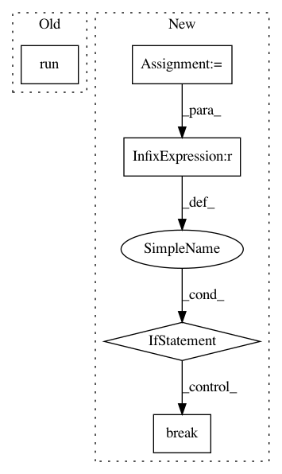

f2073333b710a340403843763ba60eb1e6699916,examples/data_process/tutorial_tfrecord2.py,,,#,81
Before Change
for i in range(3): // number of mini-batch (step)
print("Step %d" % i)
val, l = sess.run([img_batch, label_batch])
print(val.shape, l)
tl.visualize.images2d(val, second=1, saveable=False, name="batch" + str(i), dtype=np.uint8, fig_idx=2020121)
tl.vis.save_images(val, [2, 2], "_batch_%d.png" % i)
After Change
print("img_batch : %s" % img_batch.shape)
print("label_batch : %s" % label_batch.shape)
i = 0
for img_batch, label_batch in read_and_decode("train.cifar10"):
tl.visualize.images2d(img_batch, second=1, saveable=False, name="batch" + str(i), dtype=np.uint8, fig_idx=2020121)
i += 1
if i >= 3:
break
In pattern: SUPERPATTERN
Frequency: 3
Non-data size: 5
Instances
Project Name: tensorlayer/tensorlayer
Commit Name: f2073333b710a340403843763ba60eb1e6699916
Time: 2019-04-11
Author: rundi_wu@pku.edu.cn
File Name: examples/data_process/tutorial_tfrecord2.py
Class Name:
Method Name:
Project Name: ray-project/ray
Commit Name: 57544b1ff9f97d4da9f64d25c8ea5a3d8d247ffc
Time: 2020-05-11
Author: sven@anyscale.io
File Name: rllib/examples/rock_paper_scissors_multiagent.py
Class Name:
Method Name: run_heuristic_vs_learned
Project Name: michaelhush/M-LOOP
Commit Name: 6e5cf676b113af8d70e34224f23bc8eace618856
Time: 2017-05-02
Author: harry.slatyer@gmail.com
File Name: mloop/nnlearner.py
Class Name: SingleNeuralNet
Method Name: fit